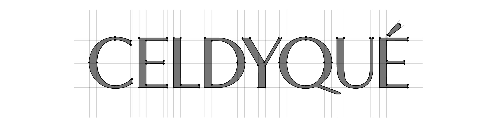
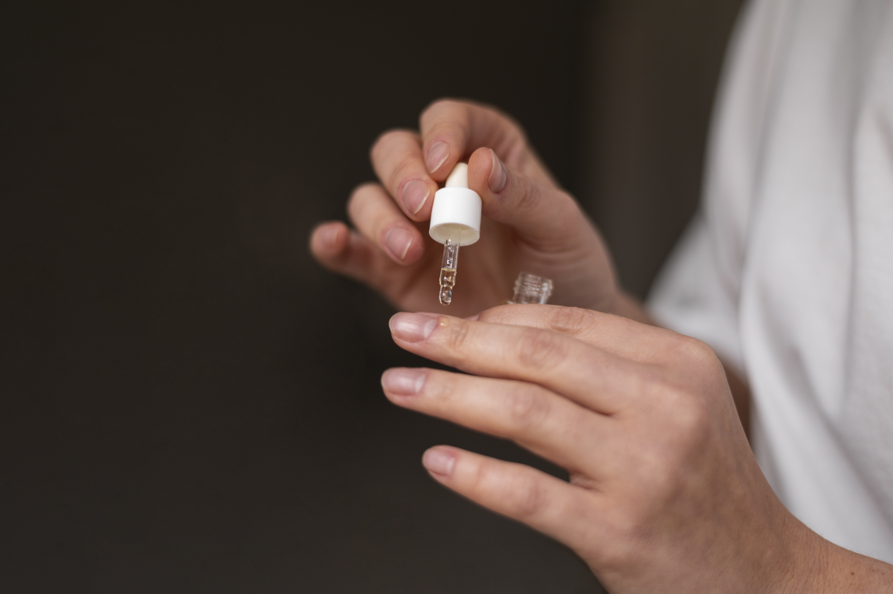

Brand Story
We strive to find the perfect balance for each product to achieve optimal efficacy.
CELDYQUE constantly researches optimal concentrations and true efficacy so that your skin can always remain in its perfect state. Our mission is not to chase trends, but to persistently research each ingredient to find the perfect formula.

We aim to find and provide raw materials with proven efficacy through new research data and papers. Our research involves diligently studying clinical data to identify the exact concentration at which each active ingredient performs best.
Celdyque의 철학은 단순합니다.
1st Step
새로운 연구자료와 논문을 통해 입증된 효능 원료를 찾아 제공합니다.

2nd Step
최고의 효능을 유지하면서 편안한 사용감을 제공합니다.
3rd Step
의미없는 제품라인 확장을 위해 무분별한 제품을 개발하지 않습니다.
4th Step
눈에 보이는 변화를 통해 자신감을 되찾을 수 있습니다.